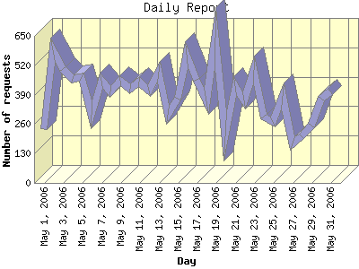

Report generated by Analog 6.0 and Report Magic 2.21
|
Web Server Statistics for "Harish Narayanan (hnarayan) - May 2006" Report generated by Analog 6.0 and Report Magic 2.21 |
The Daily Report identifies the activity for each day within the reporting period. Remember that one page hit can result in several server requests as the images for each page are loaded.

| Day | Number of requests | Number of bytes transferred | Percentage of the bytes | Percentage of the requests | |
|---|---|---|---|---|---|
| 1. | May 1, 2006 | 237 | 9.588 MB | 0.46% | 1.94% |
| 2. | May 2, 2006 | 587 | 15.506 MB | 0.74% | 4.82% |
| 3. | May 3, 2006 | 503 | 20.349 MB | 0.98% | 4.13% |
| 4. | May 4, 2006 | 458 | 19.649 MB | 0.94% | 3.76% |
| 5. | May 5, 2006 | 466 | 20.961 MB | 1.01% | 3.82% |
| 6. | May 6, 2006 | 302 | 5.888 MB | 0.28% | 2.48% |
| 7. | May 7, 2006 | 452 | 21.425 MB | 1.03% | 3.71% |
| 8. | May 8, 2006 | 405 | 77.246 MB | 3.71% | 3.32% |
| 9. | May 9, 2006 | 453 | 15.612 MB | 0.75% | 3.72% |
| 10. | May 10, 2006 | 417 | 18.010 MB | 0.86% | 3.42% |
| 11. | May 11, 2006 | 449 | 12.364 MB | 0.59% | 3.68% |
| 12. | May 12, 2006 | 410 | 28.002 MB | 1.34% | 3.36% |
| 13. | May 13, 2006 | 490 | 15.026 MB | 0.72% | 4.02% |
| 14. | May 14, 2006 | 300 | 8.438 MB | 0.41% | 2.46% |
| 15. | May 15, 2006 | 374 | 9.978 MB | 0.48% | 3.07% |
| 16. | May 16, 2006 | 566 | 19.853 MB | 0.95% | 4.64% |
| 17. | May 17, 2006 | 456 | 16.984 MB | 0.82% | 3.74% |
| 18. | May 18, 2006 | 361 | 9.193 MB | 0.44% | 2.96% |
| 19. | May 19, 2006 | 643 | 15.938 MB | 0.77% | 5.28% |
| 20. | May 20, 2006 | 208 | 30.799 MB | 1.48% | 1.71% |
| 21. | May 21, 2006 | 430 | 1.286 GB | 63.25% | 3.53% |
| 22. | May 22, 2006 | 363 | 166.958 MB | 8.02% | 2.98% |
| 23. | May 23, 2006 | 498 | 11.858 MB | 0.57% | 4.08% |
| 24. | May 24, 2006 | 292 | 65.463 MB | 3.15% | 2.40% |
| 25. | May 25, 2006 | 271 | 61.144 MB | 2.94% | 2.22% |
| 26. | May 26, 2006 | 384 | 16.788 MB | 0.81% | 3.15% |
| 27. | May 27, 2006 | 176 | 4.800 MB | 0.23% | 1.44% |
| 28. | May 28, 2006 | 205 | 5.143 MB | 0.25% | 1.68% |
| 29. | May 29, 2006 | 255 | 7.066 MB | 0.34% | 2.09% |
| 30. | May 30, 2006 | 374 | 23.340 MB | 1.12% | 3.07% |
| 31. | May 31, 2006 | 405 | 11.684 MB | 0.56% | 3.32% |
Most active day May 19, 2006 : 350 pages sent. 643 requests handled. 16,712,721.00 served.
Daily average: 393 requests handled. 67.150 MB served.
This report was generated on July 25, 2006 14:40.
Report time frame May 1, 2006 00:00 to May 31, 2006 23:56.
| Web statistics report produced by: | |
 Analog 6.0 Analog 6.0 |  Report Magic 2.21 Report Magic 2.21 |